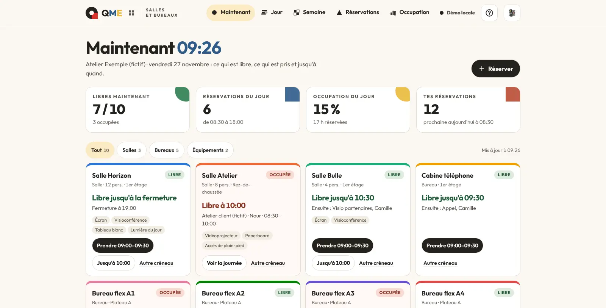
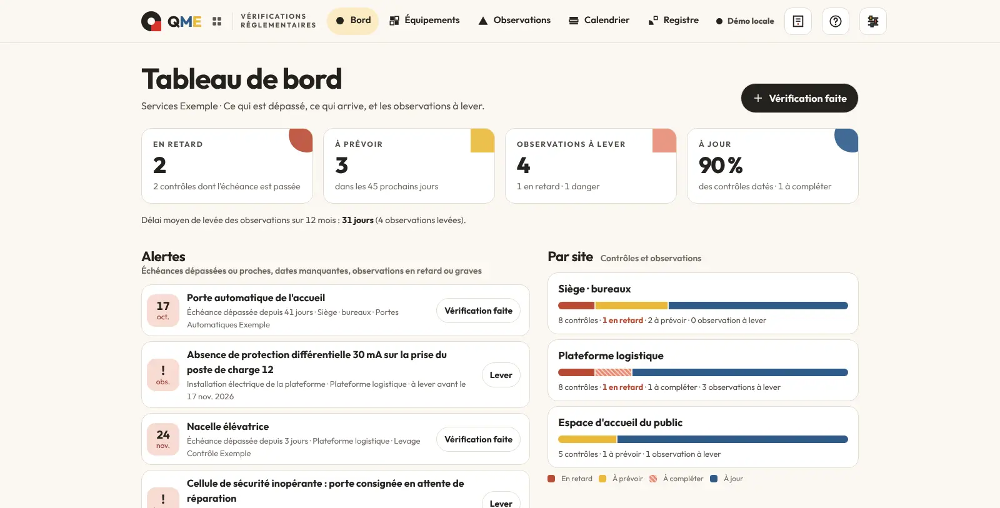
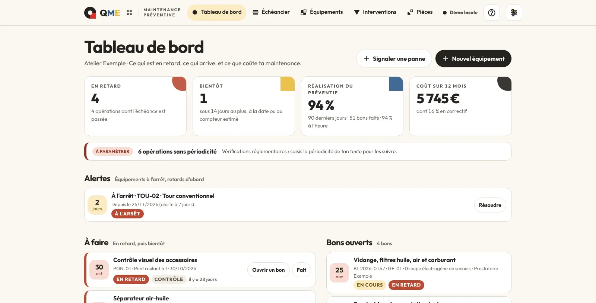
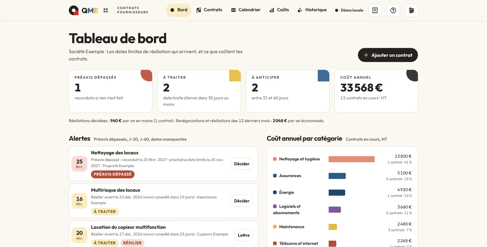
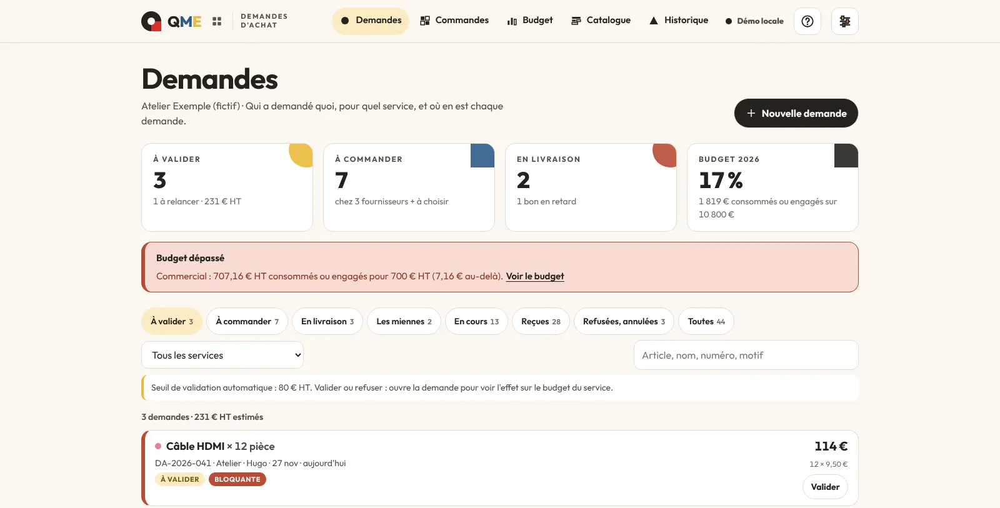
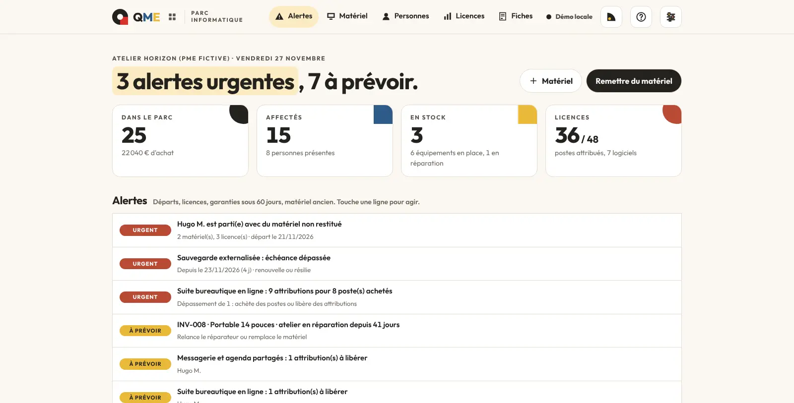
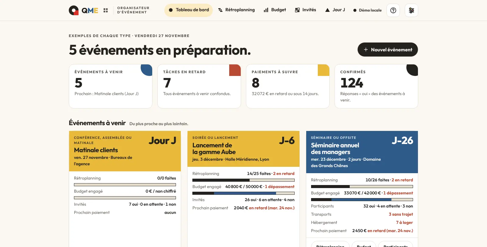

Concept pour les coworkings et centres d'affaires · pack prêt à l'emploi
L'exploitation d'un lieu de travail partagé, au même endroit.
Des outils en ligne, déjà prêts, conçus par un ingénieur pour ce qui se passe derrière l'accueil : les salles et les bureaux, les vérifications du bâtiment, la maintenance, les contrats de ménage, d'internet et de sécurité, les achats, le matériel et les événements. Chacun s'ouvre tout de suite en démo, sans inscription, et l'ensemble peut être adapté sur mesure à votre lieu.
Chaque démo ouvre un exemple fictif (lieux, prestataires, personnes inventés), sans inscription. Elle reste dans votre navigateur et n'envoie rien. Toutes les données affichées sur cette page sont fictives.
Le quotidien
Les rapports de contrôle dans un classeur, l'entretien de la climatisation dans un agenda, les contrats dans la messagerie, les achats sur des post-it. Rien ne prévient quand une échéance arrive.
Ce que cela coûte
Un extincteur ou une installation électrique hors délai découvert le jour de la commission de sécurité, un contrat de ménage reconduit un an de plus faute d'avoir résilié à temps, une panne qui vide une salle louée.
Ce que fait le pack
Il tient chaque registre avec ses échéances, met les retards en tête de liste, prépare les relances et les documents à imprimer.
L'exploitation du lieu, en sept outils
Les outils du pack qui servent le plus dans un coworking ou un centre d'affaires. Chaque capture vient de la démo réelle de l'outil.
- 01Salles et bureaux
- 02Vérifications
- 03Maintenance
- 04Contrats
- 05Achats
- 06Parc informatique
- 07Événements
01 · Les espaces
Les salles et les bureaux, sans doublon
Salles de réunion, bureaux, cabines téléphoniques et équipements prêtés : qui occupe quoi, et ce qui est libre maintenant.
- Vue « libre maintenant », vue du jour et de la semaine
- Une réservation qui chevauche une autre est refusée
- Taux d’occupation par salle et par bureau, sur la semaine ou douze semaines

02 · Le bâtiment
Les vérifications d’un lieu qui reçoit du public
Chaque contrôle du bâtiment à sa périodicité, l’échéance qui approche signalée, le rapport et ses observations suivis jusqu’à la levée.
- Électricité, extincteurs, éclairage de sécurité, désenfumage, portes automatiques, ascenseur
- Périodicités sourcées (brochure INRS ED 828), ERP de 5e catégorie compris
- Registre imprimable, site par site, pour la commission de sécurité

03 · Le bâtiment
La maintenance planifiée, pas subie
Climatisation, chaudière, VMC, machines à café, imprimantes : chaque équipement avec son entretien, à la date ou au compteur.
- Opérations en retard et à venir en tête de liste
- Pannes signalées et bons d’intervention
- Coût de la maintenance sur douze mois, préventif et correctif

04 · Les prestataires
Ménage, internet, sécurité : les contrats sous contrôle
Chaque contrat fournisseur avec sa date limite de résiliation calculée, pour décider avant la tacite reconduction.
- Préavis dépassés, à traiter, à anticiper
- Coût annuel par catégorie de contrat
- Lettre de résiliation préparée et calendrier des échéances

05 · Les achats
Les achats du lieu, demandés, validés, regroupés
Café, fournitures, consommables, petit mobilier : les demandes arrivent au même endroit, se valident et partent en une commande par fournisseur.
- Seuil de validation automatique, demandes à valider en tête
- Commandes regroupées par fournisseur et bon imprimable
- Budget annuel suivi, dépassement signalé

06 · Le parc
Imprimantes, réseau, écrans : le matériel inventorié
Le matériel du lieu, ce qui est prêté et à qui, les licences et les fins de garantie, au même endroit.
- Alertes : garantie qui se termine, matériel non restitué, licences en trop
- Fiche et historique de chaque appareil
- Matériel en stock, en place ou en réparation

07 · La vie du lieu
Afterworks, ateliers, petits-déjeuners : les événements préparés
Chaque événement avec son rétroplanning, son budget, ses invités et le déroulé du jour J.
- Tâches en retard et paiements à suivre
- Réponses des invités et nombre de confirmés
- Budget prévu, engagé et payé, poste par poste

Les trois autres outils du pack
Inclus dans le pack, utiles selon votre organisation.
Prêt à l'emploi, ou sur mesure
Les outils sont prêts : ils s'ouvrent en ligne, sur ordinateur comme sur téléphone, et les données sont synchronisées. Si votre lieu demande autre chose, je le construis pour vous.
Le pack prêt à l'emploi
223 € au lieu de 298 €, les dix outils
- Achat unique, sans abonnement ni renouvellement
- Chaque outil aussi vendu seul, de 19 € à 39 €
- 14 jours d'essai gratuit avec vos données, sans carte bancaire
La version sur mesure
Adaptée à votre lieu
- Plusieurs sites ou plusieurs étages, vos propres grilles de contrôle
- Vos prestataires, vos catégories d'achats, vos budgets
- Vos documents, vos exports, vos indicateurs
Les outils servent à l'exploitation du lieu par votre équipe ; ils ne remplacent pas un portail de réservation pour vos membres. Ils peuvent contenir les coordonnées professionnelles de vos prestataires : il vous appartient d'en informer les personnes concernées. Les données des démos sont fictives et ne quittent pas votre navigateur.
Trente minutes pour voir ce qui vous ferait gagner le plus de temps
Ouvrez une démo, puis dites-moi comment vous suivez aujourd'hui les contrôles, la maintenance et les contrats de votre lieu : je vous dis franchement si les outils prêts à l'emploi suffisent, ou ce qu'une version sur mesure changerait.